3. The QGIS Interface
QGIS (QGIS 3.40.0-1 Brastislava version) provides an easy to use Graphical user interface (GUI) to explore, create and edit geospatial data. Commands and functions are activated using a combination of menu, toolbar and keyboard shortcut actions within the application.
This exercise will explore the basic interface of QGIS. You will create your first QGIS project, load various data layers, customize the appearance of your map using various data symbology and colors.
Interface Overview
{kind=link}
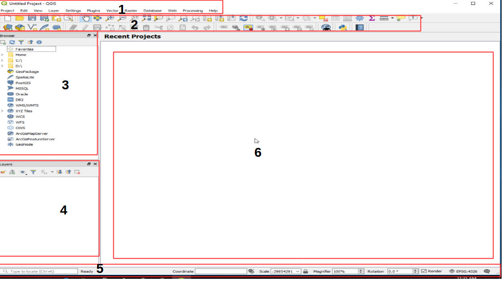
1 - Menu Bar - This provides dropdown buttons where specific functions or processing can selected. Most of the functionality in the Toolbar are up here as well. Don’t forget the all-important Help. QGIS has a good documentation, so use it.
2 - Tool Bar - Every button in the Tool Bar allows you to run modules or issue commands to visually interact with your map project. Like most modern windows applications, you can drag the button bars around and move them between layers. Hover over each button and you will get a short description of what each button can do.
3 - Browser - Shows the available file directories and databases where loadable files are located.
4 - Map Legend/Layers - Where you manage layers and interact with them, such adding/deleting layers, grouping them, setting symbology, and such.
5 - Status Bar - Shows status, coordinates and scale of the Map View. Sometimes map display updates also called rendering can be slow when using large data files. You can turn off rendering when dealing with large files until you want to see the layers.
6 - Map View/Canvas - The main map area where the layer outputs show up and visualize your project.
3.1. Creating a new project
Launch QGIS by clicking Start Menu button, click the .
{kind=link}
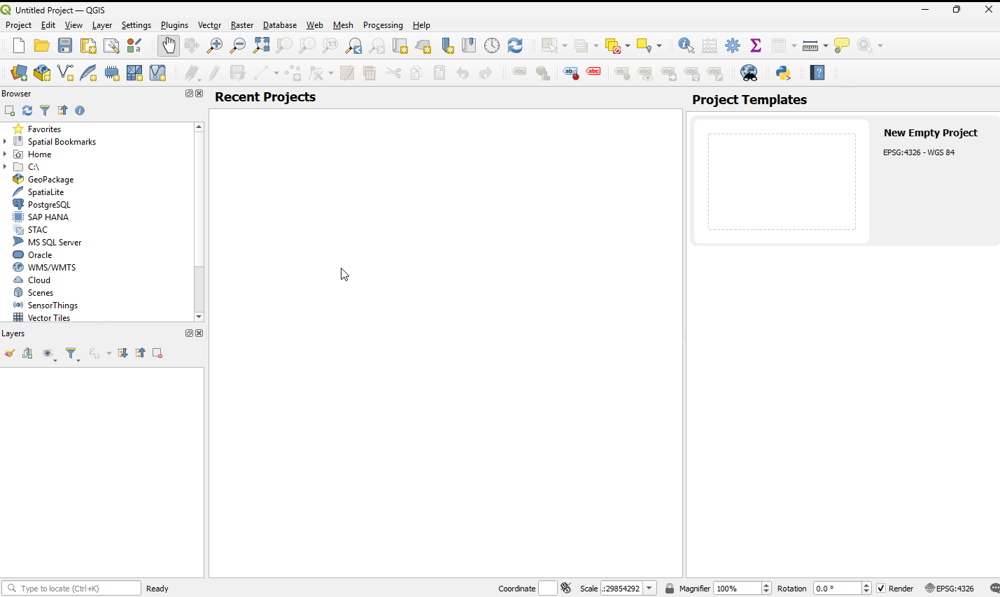
Create a new project. Click
 New Project.
New Project.Open the project properties. In the Project, select Project Properties.
{kind=link}
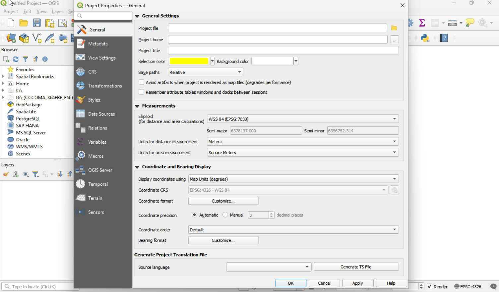
Here are the commonly used tabs of the Project Properties:
In the General Settings tab you can define the project file, home, title, selection and background colors, the option to save relative paths to layers, measure tool, canvas units, precision, and project scales.
The CRS tab enables you to choose the Coordinate Reference System (CRS) for this project.
The Styles tab shows options to customize and select defaut styles for layer styling.
Select the Coordinate Reference System (CRS) tab.
The upper portion of the CRS tab shows the currently selected CRS for the project. The table below shows a list of available CRS. Choose WGS 84 - EPSG 4326. Click Apply then OK.
Note
There is no need to set the CRS of the project if the layers to be loaded are of the same projection/coordinate reference system because QGIS will draw the coordinates using the data source. In QGIS 3.40.0-1, the On The Fly projection is enabled by default.
{kind=link}
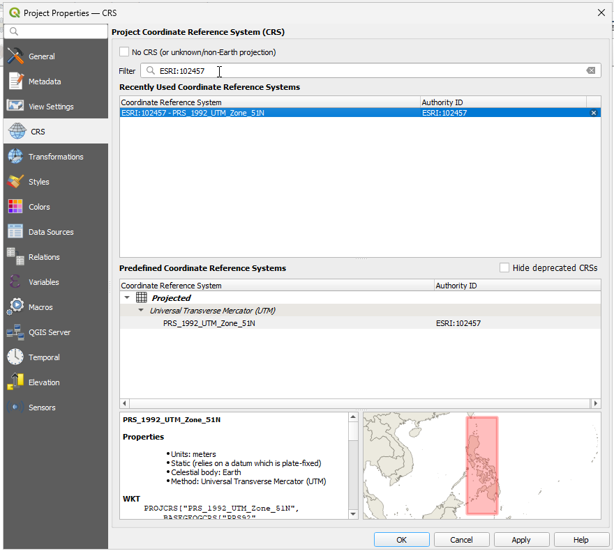
Tip
Many GIS applications open any geospatial data (vector or raster) without asking for the Coordinate Reference Systems. QGIS follows a similar behavior. However, it is a good habit to select the correct CRS whenever you start a new project. This can help you diagnose problems in the future.
3.2. Opening Vector data
Add vector layers. In the Menu, select Layer –> Add Vector Layer. The Data Source Manager window will appear.
{kind=link}
{kind=link}
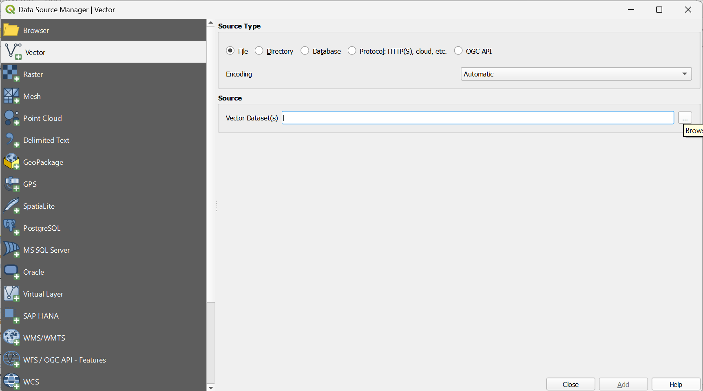
In the Data Source Manager Window, click the
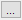
from the Source tab. A new window will appear, go to the data directory.Select multiple vector layers by holding the Shift button of your keyboard while selecting files. Select only the following files:
brgys.shp
pois.shp
roads.shp
waterways.shp
Tip
You can sort out the file types by clicking the column Type from the window.
{kind=link}
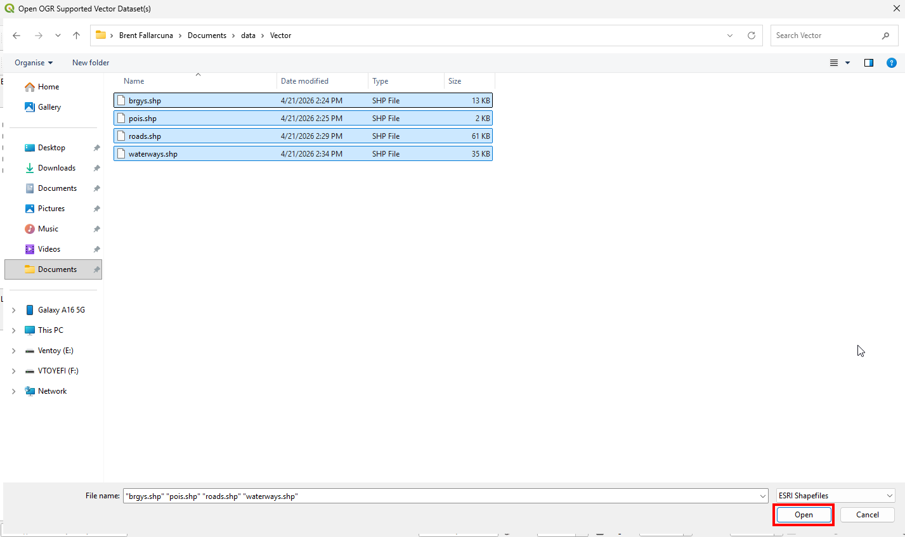
Once all the files are selected, Click Open and Add. All vector layers will be loaded within your Map View/Canvas area.
{kind=link}
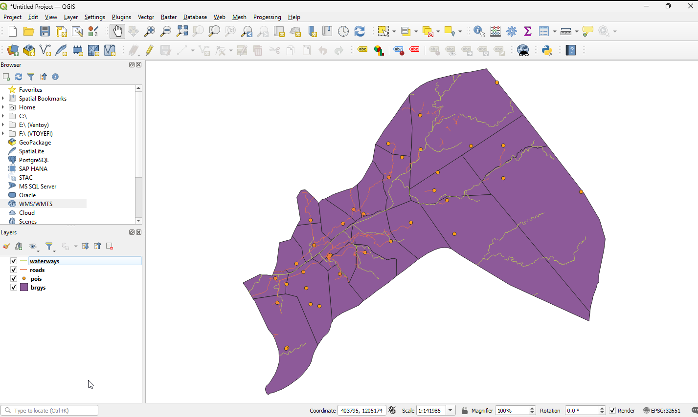
Vector data are represented as either point, line or polygon. The type of vector depends on what information you wish to convey.
Points - represented by a single X,Y coordinate. A point normally represents a geographic feature that is too small to be displayed as a line or area. For example, individual trees and fire hydrants.
Lines - A set of ordered coordinates that represent the shape of geographic features too narrow to be displayed as an area at the given scale or linear features with no area (municipal boundary lines). For example, railways, roads, rivers.
Polygons - A feature used to represent areas. A polygon is defined by the lines that make up its boundary and a point inside its boundary for identification. Polygons have attributes that describe the geographic feature they represent. For example, forest stands, farm lands and lakes.
2. Arrange the display order of layers by selecting a layer in the Map Legend and then drag to either above or below the other layers.
Arrange the data according to this list from top to bottom:
pois.shp
waterways.shp
roads.shp
town.shp
Tip
Mapping standards suggest that points layers should be on top followed by lines and finally polygons.
3.3. Saving your project
{kind=link}
Click Save. You have saved your first QGIS project.
Note
There is a new format option for saving QGIS project files which is qgz. It will be useful for easing the data file paths and embedding fonts, SVGs, styles/symbolization, etc. Click here for more information.
A QGIS session is considered a Project. QGIS works on one project at a time. Settings are considered as being per-project or as a default for new projects. The kinds of information saved in a project file include:
Layers added
Layer properties, including symbolization
Projection for the map view and
Last viewed extent
Warning
The project file is saved in XML format (specifically in the .qgz file extension), It is possible to edit the file outside QGIS using a text editor program (Notepad), but be extra careful since it might corrupt the .qgz file.
{kind=link}
{kind=link}
{kind=link}
{kind=link}
{kind=link}
{kind=link}
{kind=link}
{kind=link}
3.5. Changing the look of your layers
1. Change vector layer properties allows you to change its appearance like color and symbolization. Right-click waterways layer and select Properties from the pop-up menu.
{kind=link}
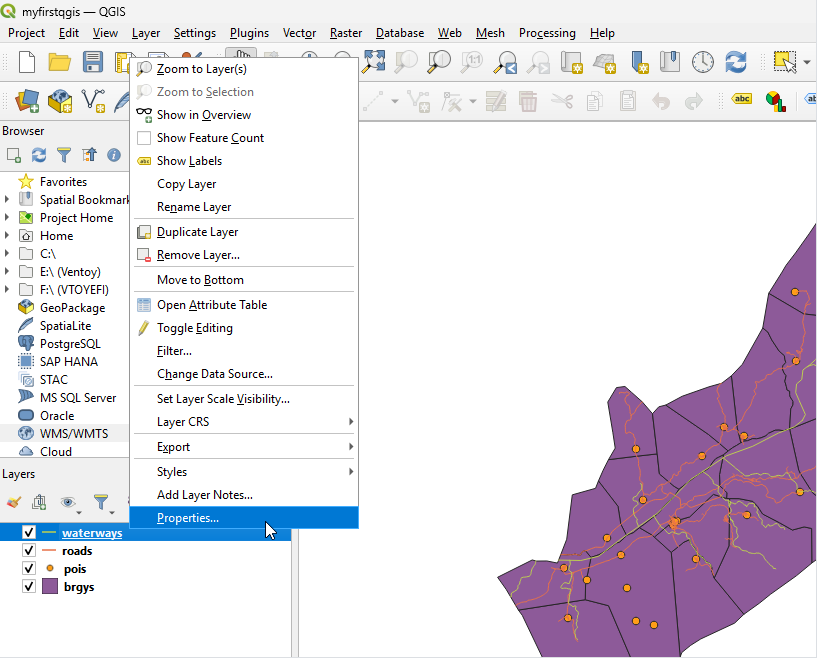
The Layer Properties dialog for a vector layer provides information about the layer, such as style settings and labeling options and others.
{kind=link}
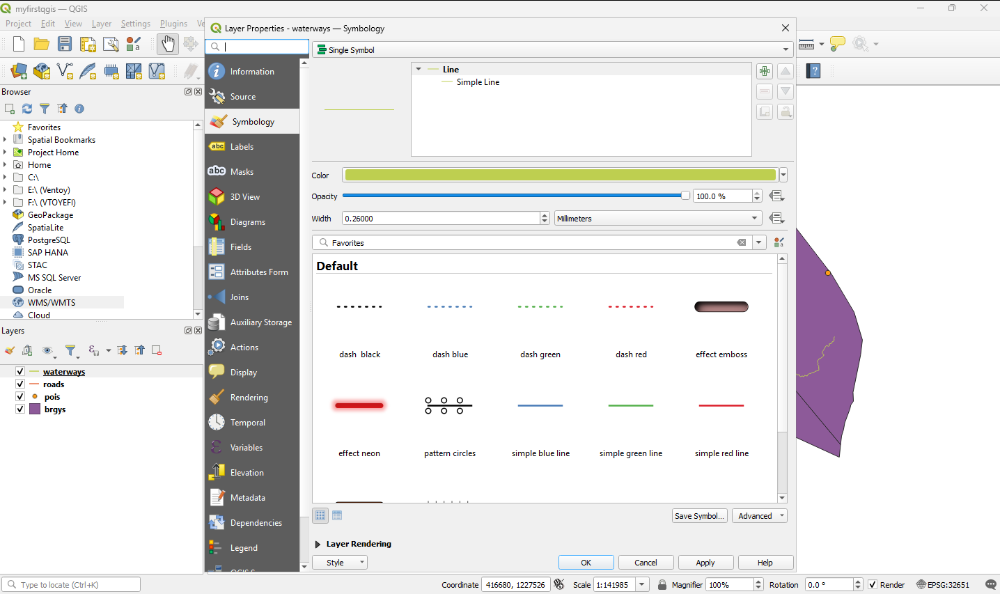
2. Select the Symbology tab on the left pane as shown above. The Symbology tab provides several ways to control how vector features are displayed. For this layer, we will change the line color of waterways layer. Click the drop-down interface and select Single Symbol, which is the default.
{kind=link}
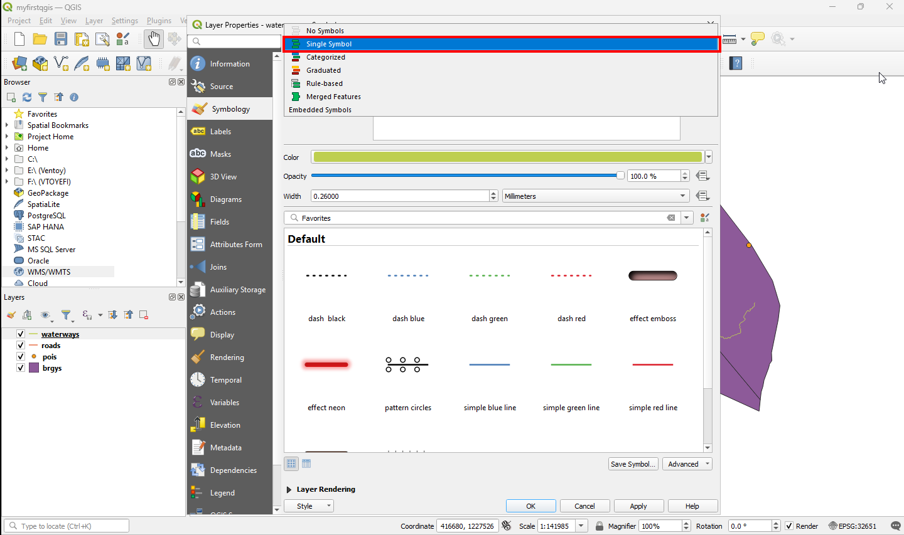
3. Click the color bar of Color dropdown button to see the standard colors (if there are any), then click the appropriate blue color that is suited for waterways layer.
{kind=link}
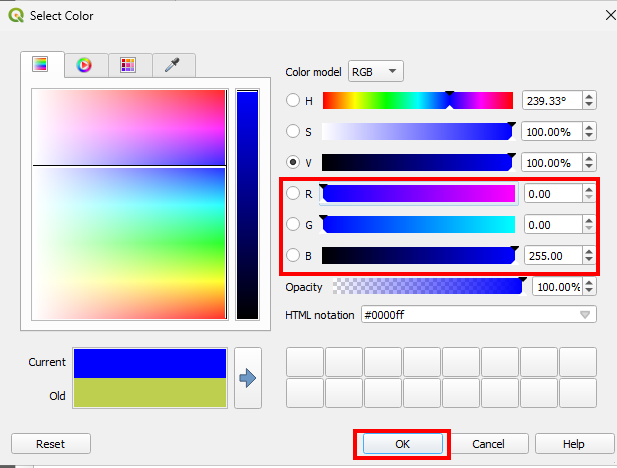
If you want a more precise color with RGB values, click the Color dropdown button and a new Select color dialog appears as shown below. Choose the color Blue or set the Red,Green, Blue (R : G : B) values to 0 : 0 : 255 respectively and click OK.
{kind=link}
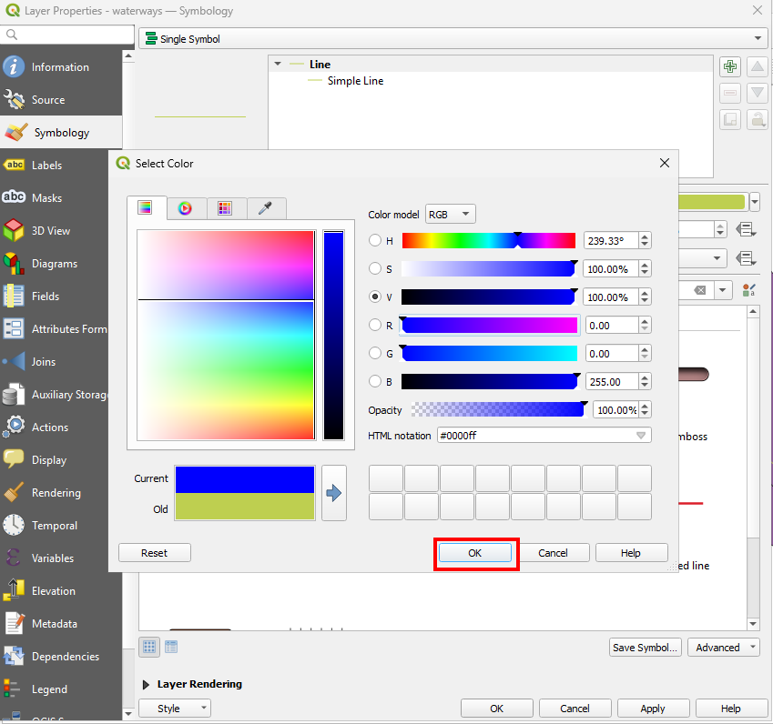
4. Select the Source tab where you can change the display name, create a spatial index of the vector file, and view or change the CRS of the specific vector layer.
{kind=link}
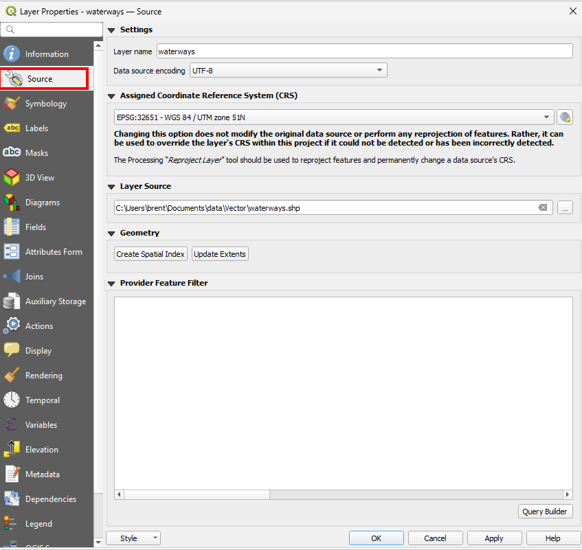
5. Click Create Spatial Index button and a notification will appear that spatial index creation is successful (click the Ok button to close it). A spatial index will improve the speed of both zooming and panning. A spatial index used by QGIS have a .qix extension. Click OK button to apply the new settings and close the Layer Properties dialog box.
{kind=link}
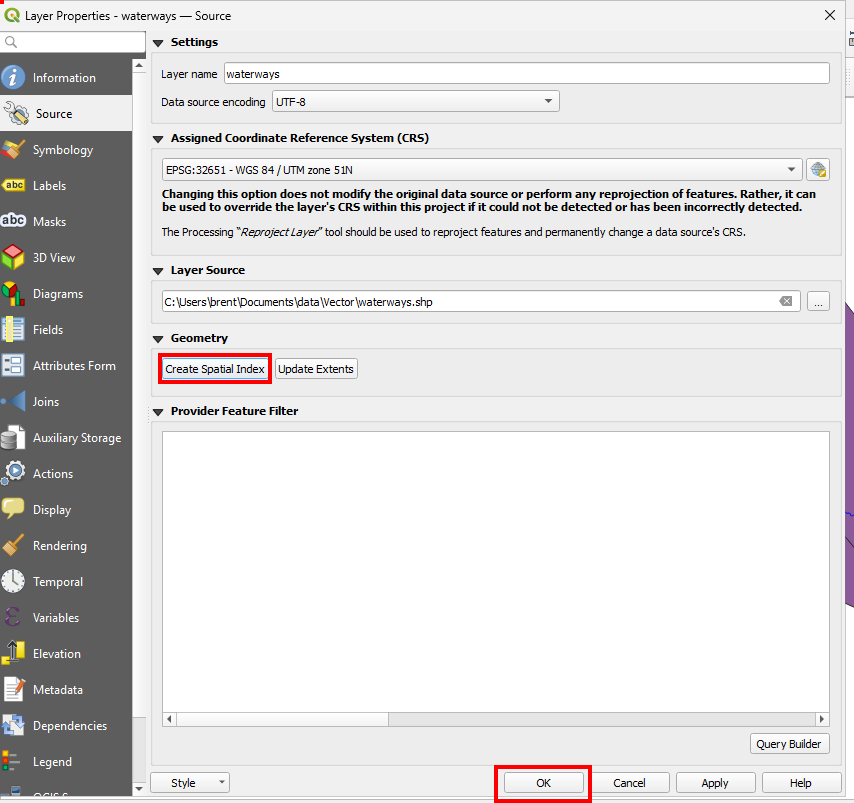
6. Repeat all the Layer Properties steps above to change the appearance of the other vector layers pois, roads, and towns.
7. Explore the other options of the vector properties. The Layer Properties provides several options to customize the look and feel of your layers. Use the other options until you’re satisfied with the look.
Try the different symbol layer types:
Outline/Line options
Fill options
Different markers for points
Opacity/Transparency
3.5.1. Using custom styles
QGIS provides many features for styling and improving the look of your maps. The custom symbologies and scale-dependent rendering are possible for any vector type.
Note
There are three types of symbols: marker symbols (for points), line symbols (for lines) and fill and outline symbols (for polygons). Symbols can consist of one or more symbol layers. It is possible to define the color of a symbol and this color is then defined for all symbol layers. Some layers may have the color locked - for those the color can not be altered. This is useful when you define the color of a multilayer symbol. Similarly, it is possible to define the width for line symbols, as well as size and rotation for marker symbols.
More information is available in the QGIS User Guide
For this exercise, we will use a pre-defined style available in the data/styles directory.
Select the roads layer and right-click Properties.
2. Within the Style tab of the roads layer, click Load Style. Click the the box with three dot line and open your Styles directory and select roads_style.qml. Click Open to select the style.
{kind=link}
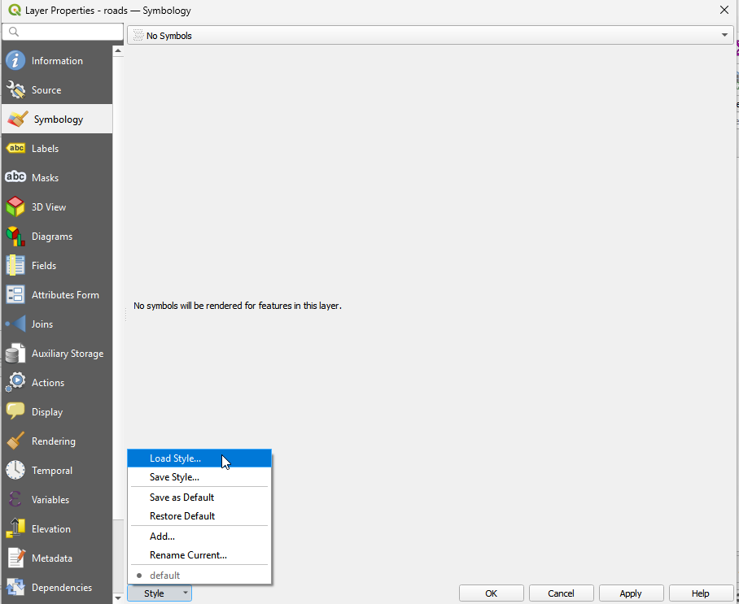
{kind=link}
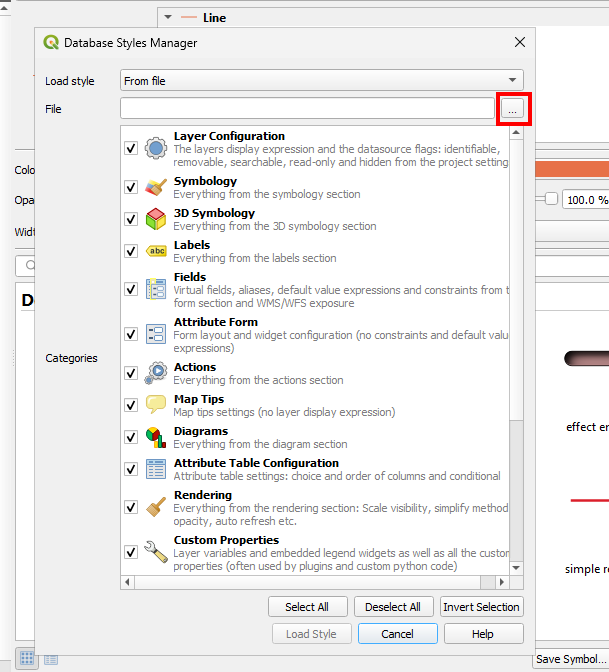
{kind=link}
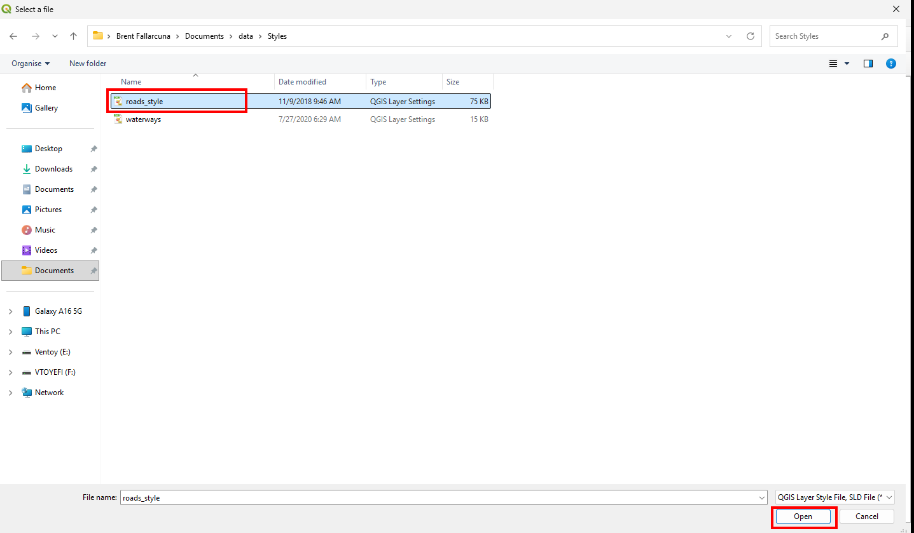
3. Click the Style on the left pane to see the rule-based style from roads_style.qml according to different road types. This custom style also uses the scale-dependent rendering. Click OK.
{kind=link}
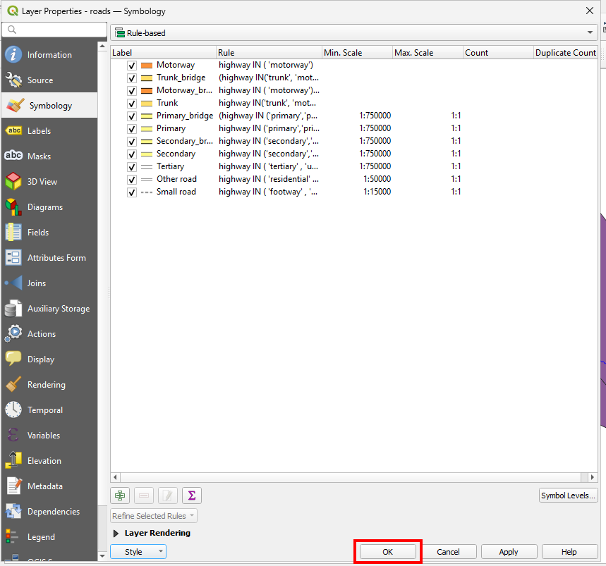
Tip
Scale dependent rendering allows you to set what features can be viewed at certain scale. This allows you to minimize “map clutter”. For example, in the roads layer, we set the scale for minor roads (tertiary, small road, other road) to appear only on larger scales over the other road types.
Zoom in and out of the Map view to see the scale-dependent rendering in action. If all the white roads are visible (with single yellow road) in smaller scale, then our map will be mostly covered with roads.
{kind=link}
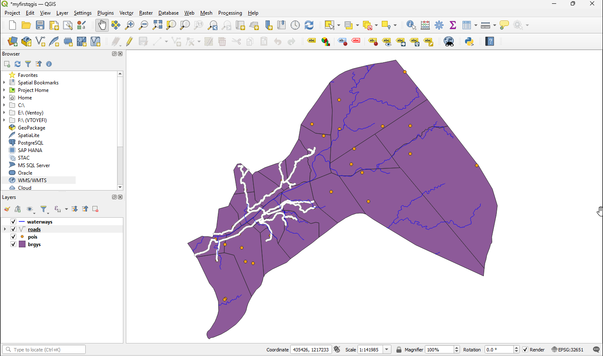
You can further customize the styles according to your preference by selecting any of the road style definition class. Right-click the roads layer again and select Properties to open the Layer Properties dialog box. In the Style pane, double-click Motorway label class. This opens a new window for the Rule properties where you can modify the appearance and other properties of the road type.
{kind=link}
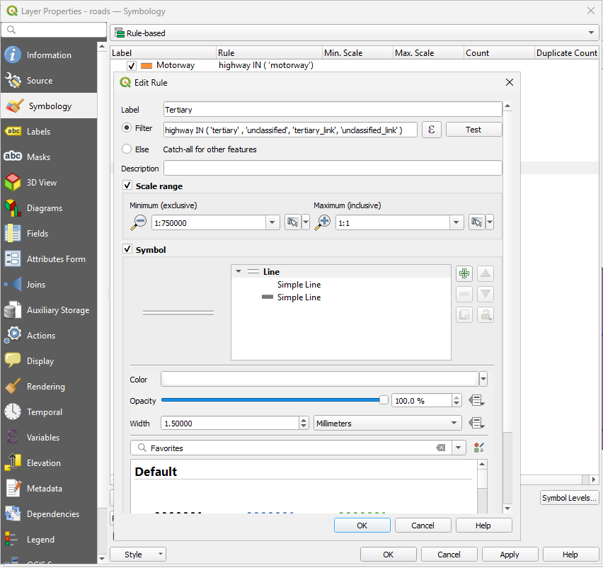
6. Create custom styles for the other layers in your project as well.
3.5.2. Using the Labeling Tool
The Labeling tool provides smart labeling for vector point, line and polygon layers and only requires a few parameters.
1. Select the roads layer and right-click then select Properties. On the Layer Properties window, select Label tab. Follow the following options shown in the screenshots below:
{kind=link}
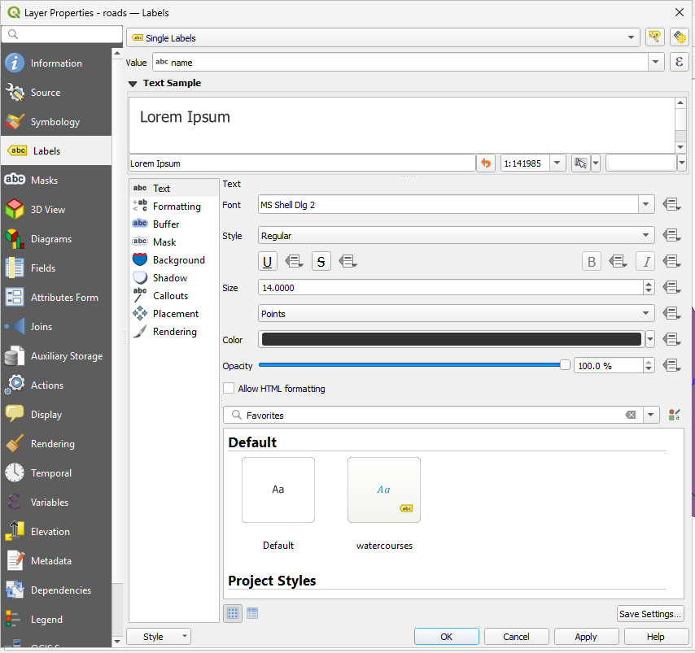
{kind=link}
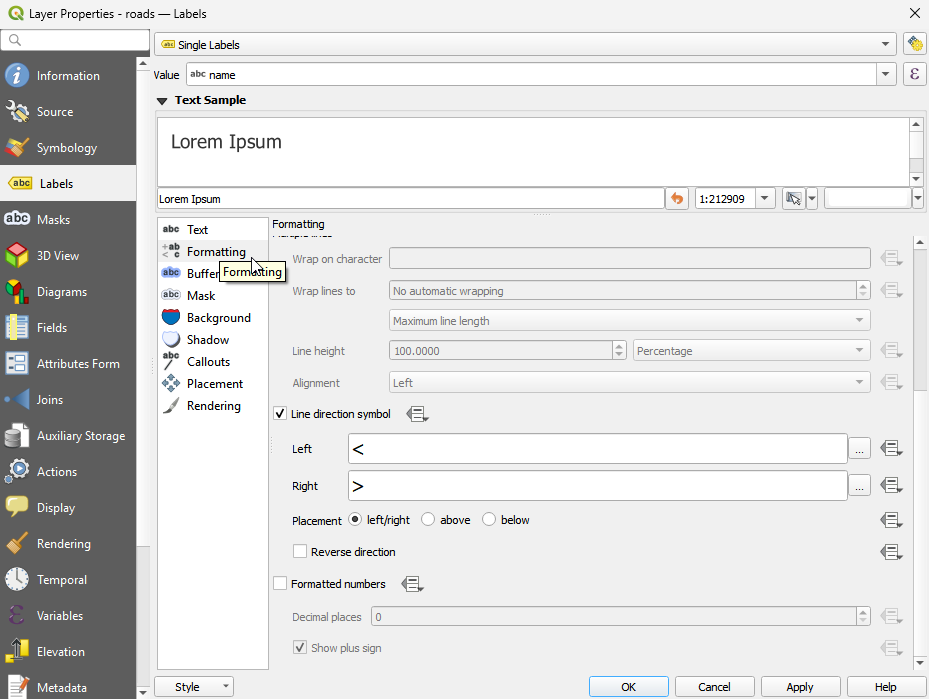
{kind=link}
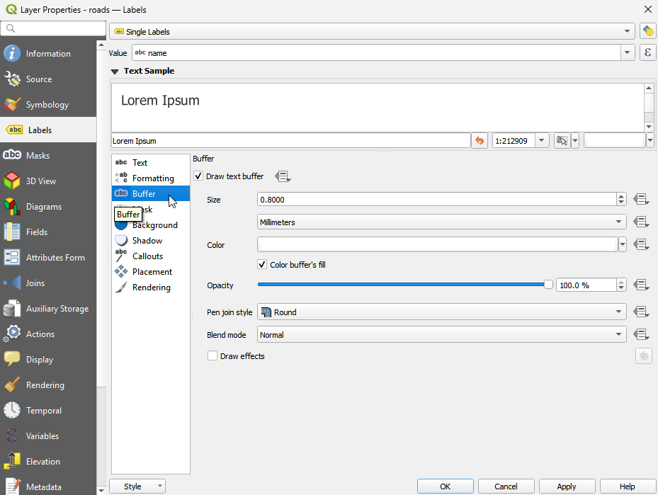
2. Select OK. The label for Roads should be placed above the road line. As you pan around the map, you’ll find that labels are placed nicely.
{kind=link}
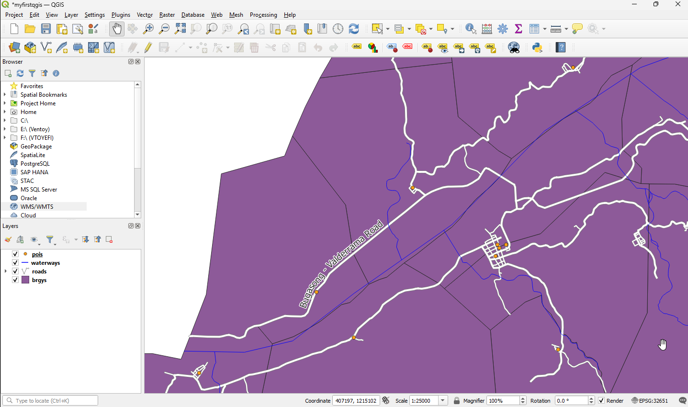
3.6. Other tips
3.6.1. Line and Area Measurements
To interactively measure length and area, use the:
Measure line
Measure area
Measure angle
The tool then allows you to click points on the map. The length of each segment as well as the total length appear in the Measure window. To stop measuring, click the right mouse button. Polygon areas and angles can also be measured. The accumulated measures will be visible in the measure window.
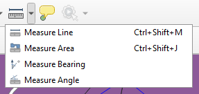
3.6.2. Exporting Map Image
In the Menu, select Project –> Save as image.
Select your preferred filename and image type. Click Save. You now have you first map image which you can add in any document or report.
3.6.3. Save your project
To save your project, select Project –> Save Project.
Tip
It is good practice to save your project after every major editing activity. Make sure you save your project frequently. Or better, practice the keyboard shortcut to save projects: Ctrl+S.
3.6.4. Additional Youtube Video
This video uses an older version of QGIS, nonetheless the basic interface and layouts remain the same. An offline version is also available in this link.